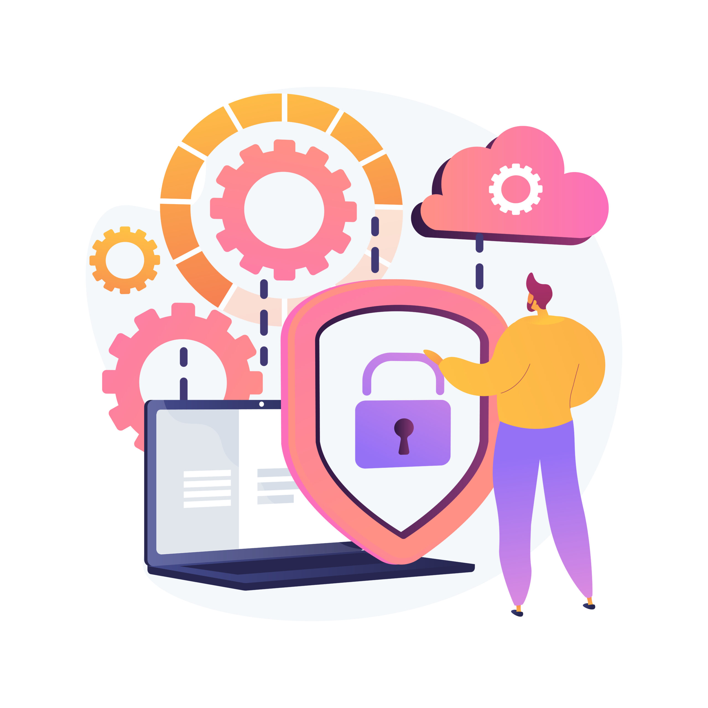
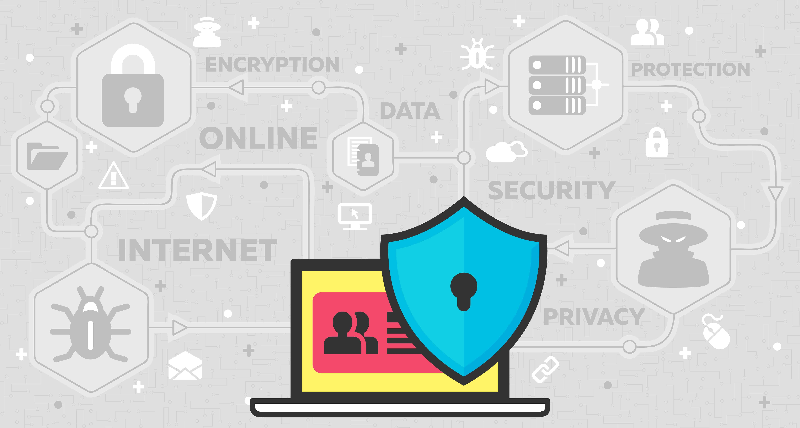

Recomendaciones de Seguridad
Para mantener la seguridad de los equipos de cómputo, es fundamental implementar las siguientes recomendaciones:
- Actualizar Regularmente: Mantener actualizado el sistema operativo y el software con los últimos parches de seguridad.
- Uso de Contraseñas Seguras: Utilizar contraseñas fuertes y cambiarlas periódicamente.
- Instalar Antivirus: Emplear software antivirus confiable y mantenerlo actualizado.
- Realizar Copias de Seguridad: Hacer copias de seguridad periódicas de los datos importantes para protegerlos contra pérdidas.
- Educación y Concienciación: Capacitar a los usuarios sobre prácticas seguras, como evitar hacer clic en enlaces sospechosos o descargar archivos de fuentes no confiables.

Seguridad a Nivel de Hardware
Además de las medidas de seguridad de software, es crucial considerar la seguridad a nivel de hardware:
- Filtrado de Redes: Implementar filtros para proteger el tráfico de red.
- Control de Acceso Físico: Restringir el acceso físico a los equipos y datos sensibles mediante cerraduras y controles de acceso.
- Monitoreo de Actividad: Utilizar herramientas para monitorear la actividad del sistema y detectar posibles amenazas.
- Actualización de Firmware: Mantener actualizado el firmware de los dispositivos para corregir vulnerabilidades.
